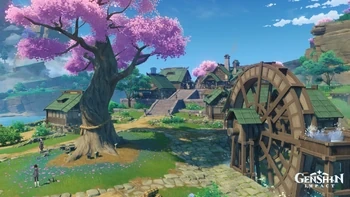
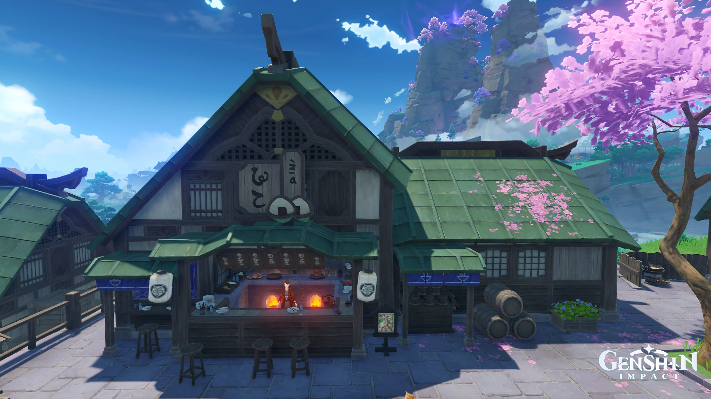
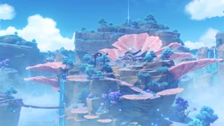

Inazuma
Un archipiélago situado en el extremo oriente de Teyvat. Encara tormentas perpetuas, adéntrate en la isla de las flores de cerezo, en sus playas, los imponentes acantilados y las solitarias montañas, y presencia la eternidad perseguida por Su Excelencia, la todapoderosa Narukami. Es la Tercera Nación de las siete naciones de Teyvat siendo representada por el elemento Electro.
Más detalles
La Ciudad de Inazuma
Las afueras de Inazuma son un lugar tranquilo y de atmósfera tradicional a las que se llega subiendo por una calle antigua. La prosperidad y el bullicio de la ciudad no parecen haber llegado hasta aquí. Pero el poder y la gracia de la Shogun también alcanzan este lugar traen un estilo de vida distinto.
Hanamizaka
El centro de Inazuma es la ciudad homónima, que se caracteriza por su arquitectura tradicional japonesa y una fuerte vigilancia debido al Decreto de Caza de Visiones.

La Ciudad de Inazuma
El centro de Inazuma es la ciudad homónima, que se caracteriza por su arquitectura tradicional japonesa y una fuerte vigilancia debido al Decreto de Caza de Visiones.
La Ciudad de Inazuma
El centro de Inazuma es la ciudad homónima, que se caracteriza por su arquitectura tradicional japonesa y una fuerte vigilancia debido al Decreto de Caza de Visiones.
La Ciudad de Inazuma
El centro de Inazuma es la ciudad homónima, que se caracteriza por su arquitectura tradicional japonesa y una fuerte vigilancia debido al Decreto de Caza de Visiones.
Santuarios y lugares emblemáticos
Entre sus lugares icónicos se encuentra el Gran Santuario Narukami, dedicado a la Arconte Electro, situado en la cima del Monte Yougou. También destacan lugares como la Isla Seirai, llena de tormentas, y la Isla Tsurumi, envuelta en niebla.


Cultura y gastronomía
La cocina de Inazuma se basa en ingredientes marinos y recetas tradicionales. Platos como la tempura o el sashimi son comunes, y pueden degustarse en lugares como el restaurante Kiminami.
Isla Watatsumi
La Isla Watatsumi , o también conocida como la isla de la resistencia, provocada por el -------- esta "liderada" por la Sacerdotista Divina.
Enkanoimiya y --------
Proximamente...
Personajes e ¿Historia?
Proximamente...
Musica, Dominios, Jefes y artefactos
Proximamente...